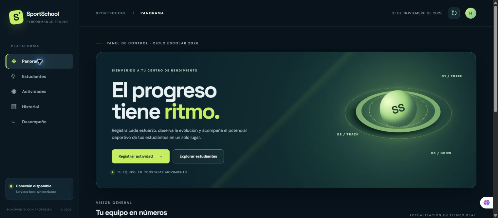
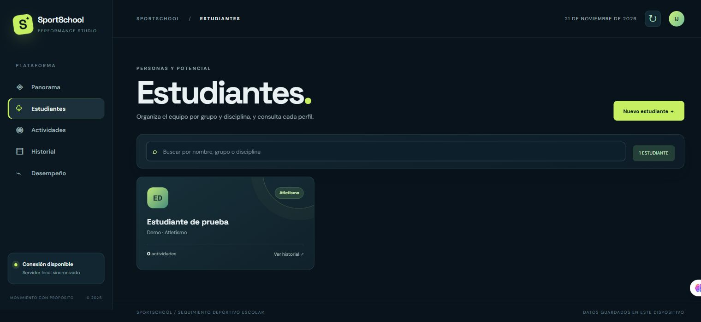
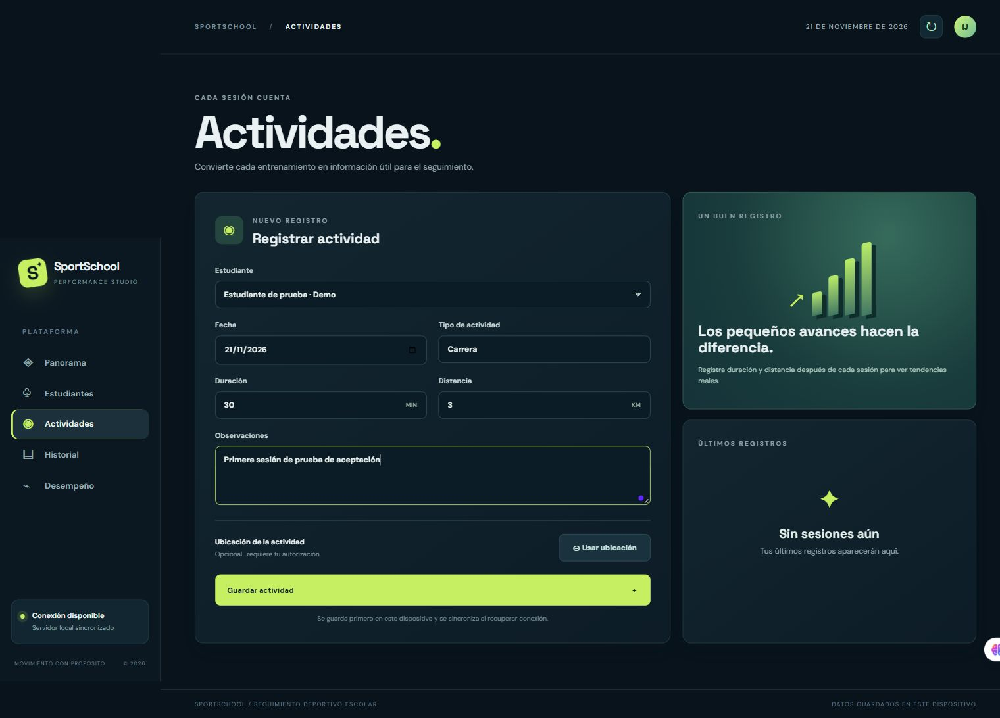
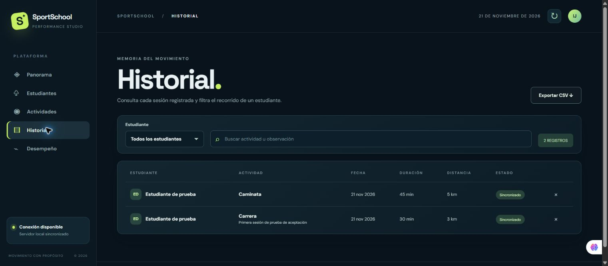
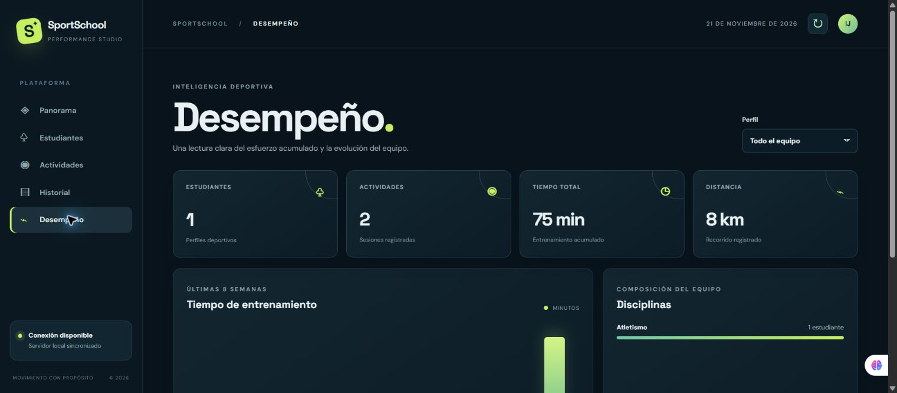

Construcción y verificación de una aplicación web progresiva
Los registros deportivos en hojas de cálculo y papel dificultan consultar el historial de cada estudiante y medir sus avances. SportSchool permite registrar alumnos, capturar sesiones y consultar actividades, minutos y kilómetros acumulados desde el navegador. La interfaz se adapta a dispositivos móviles.
Los formularios y los indicadores se actualizan en el cliente mediante JavaScript. IndexedDB conserva los datos de alumnos, actividades y eliminaciones pendientes. Un Service Worker guarda los recursos principales con Cache API. Fetch envía y recupera registros mediante la API Python del proyecto, respaldada por SQLite. La API se ejecuta en la computadora local, por lo que la sincronización entre dispositivos requiere que el servidor sea accesible; la consulta de registros locales no requiere Internet.
| Parte | Trabajo realizado |
|---|---|
| 1. Estructura | Splash, Panorama, manifest.webmanifest, dos iconos y recursos en public/. |
| 2. Interfaz y CSR | Formularios de estudiantes y actividades; historial por estudiante, búsqueda y tarjetas de desempeño. |
| 3. Datos | IndexedDB, carga al inicio y POST /api/sync mediante Fetch; API local SQLite. |
| 4. PWA | Service Worker, precarga de recursos, respuesta desde caché, notificación local con permiso y geolocalización opcional. |
| 5. Pruebas | Pruebas unitarias, handlers de API, registro visual, recarga y revisión de Service Worker en Chrome. |
| 6. Entrega | Fuentes, manifest, Service Worker, reporte, capturas y URL del repositorio. |
El servidor antes imprimía disponibilidad antes de abrir el puerto. Ahora la muestra después de enlazarlo y comunica el error real si no puede iniciar. Se corrigió el splash ante fallos de almacenamiento, la sincronización de registros creados durante Fetch, los mensajes de estado y el acceso a secciones por URL. El usuario comprobó /api/health con ok: true.

Panorama: un estudiante, dos actividades, 75 minutos y 8 km.

Perfil de prueba con grupo Demo y disciplina Atletismo.

Captura de fecha, estudiante, duración, distancia y observaciones.

Carrera (30 min, 3 km) y caminata (45 min, 5 km), presentes tras recargar Chrome y marcadas como sincronizadas.

Indicadores calculados desde los dos registros: 75 min, 8 km.
| Comprobación | Resultado |
|---|---|
| Un estudiante, dos actividades, historial e indicadores | Aprobado en Chrome; evidencias 1 a 5. |
| Persistencia tras recarga | Aprobada en Chrome; evidencia 4. |
| Fetch y sincronización | Actividades marcadas sincronizadas y API health disponible. Captura de Network POST pendiente. |
| Manifest y Service Worker | Chrome ofreció instalación y DevTools mostró Service Worker activado y en ejecución. Captura de DevTools pendiente. |
| Recarga con Offline en DevTools | Pendiente de evidencia; código de caché presente. |
| Notificación y ubicación | Implementadas; verificación sujeta al permiso del navegador. |
| Lighthouse | Sin resultado registrado. |
Desde la raíz del proyecto se ejecutaron python tests.py, python tests_api.py, node tests_sync.cjs, la comprobación sintáctica de app.js y sw.js y la compilación de server.py. Las pruebas confirmaron persistencia SQLite, validaciones, dos actividades sin duplicados y conservación de datos locales ante un fallo de red. tests_api.py invoca los handlers sin sockets; tests_sync.cjs simula Fetch para evaluar la concurrencia.
Ejecute python server.py y abra http://127.0.0.1:8080/. Use siempre el mismo origen: localhost y 127.0.0.1 mantienen almacenes IndexedDB diferentes. En Chrome, abra DevTools → Application para comprobar Manifest, Service Workers, Cache Storage e IndexedDB. En Network, pulse el botón de sincronización para observar POST /api/sync. Active Offline, recargue y consulte el historial. Vuelva a Online para sincronizar cualquier registro pendiente.
Con SportSchool integré el registro y análisis básico del desempeño deportivo escolar. Comprobé el funcionamiento de los formularios, la recuperación tras recarga y los indicadores con dos sesiones reales en el navegador. El almacenamiento local permite mantener el historial disponible y la API local respalda los registros cuando está accesible. La prueba de recarga offline y los permisos del dispositivo deben demostrarse en el navegador del entorno de evaluación antes de considerarlos aprobados.
Este proyecto es una demostración académica local sin cuentas de docentes ni control de acceso para datos escolares reales. El código y los documentos se entregan en el repositorio indicado; la ejecución se documenta en README.md y VERIFICACION.md.